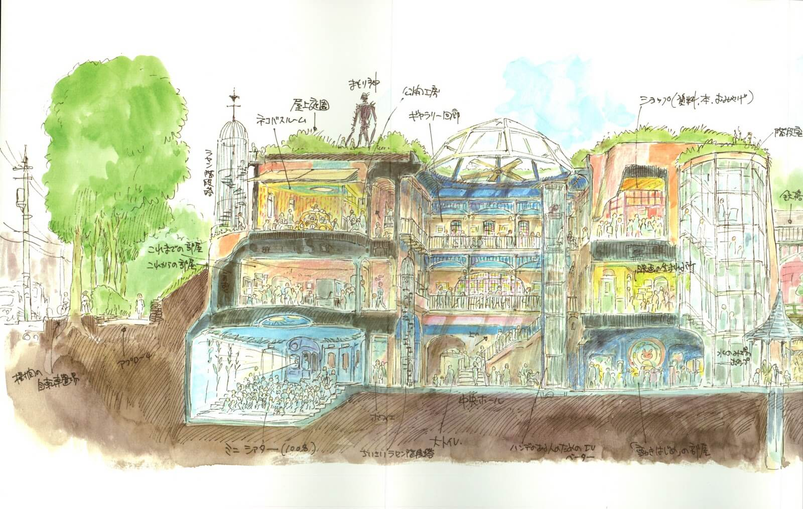
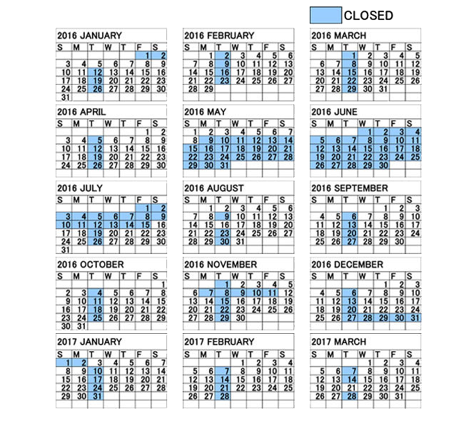

The Museum is closed every Tuesday, except on these Tuesdays:
- 2016: January 5, May 3, August 2, 16
- 2017: January 3, March 21
- Tickets for October 1 and 2, 2016 are only available to residents of Mitaka city and other neighboring cities.
The Museum will also close for Holidays and periodic maintenance:
- Periodic Maintenance 1: May 9, 2016 through July 15, 2016
- Periodic Maintenance 2: November 7, 2016 through November 11, 2016
- Year-end and New Year Holidays: December 27, 2016 through January 2, 2017

Ticket Information
Entrance to the Ghibli Museum is strictly by advance purchase of a reserved ticket which specifies the appointed date of the reservation.
Once you purchase a reserved tickets, no changes or refunds are allowed. When you enter the Museum, you will exchange your reserved ticket with a "film" ticket (Only one film ticket per person).
Ticket Admission Fees
- Adult $10.00
- Student $7.00
- Child $4.00
Children under 4 are admitted free of charge.
When purchasing the tickets outside Japan, charges will be calculated in your local currency at the current rate of exchange, and will also include a handling fee.
Exclusive Studio Ghibli Shorts - Screening Times
The Ghibli Museum screens three exclusive Studio Ghibli animated shorts, and are shown in the Saturn Theater
Feautred Shorts
- Koro's Big Day Out
- The Day I Bought a Star
- The Whale Hunt
Look here for the complete screening schedule
Please Keep in Mind While Visiting. . .
- Photography and video recording are not allowed inside the Museum. The Ghibli Museum is a portal to a storybook world. As the main character in a story, we ask that you experience the Museum space with your own eyes and senses, instead of through a camera's viewfinder. We ask that you make what you experienced in the Museum the special memory that you take home with you.
- Admission into the Saturn Theater will be limited to one screening per person.
- Smoking is strictly prohibited on the premises of the Museum.
- Please turn off all mobile phones. You are also asked not to use mobile phones outside the Museum building where they may disturb others.
- Those who are sensitive to light should be aware that in the Permanent Exhibition Room, there is an exhibit that flashes bright bursts of stroboscopic light.
- The garden roof may be closed in case of inclement weather.
- The Cat Bus is for elementary school children and under only.
- Eating and drinking are prohibited inside the Museum. Anyone who has brought food or beverages to the Museum must eat or drink on the Cafe's outside deck only (The deck area may be closed in case of inclement weather) and take with them any litter he/she has created.
- Please leave baby carriages at the designated storage area. Coin lockers are available for small bags and parcels. For large luggage, please contact our Museum staff for assistance.
- It is prohibited to enter the Museum with dangerous objects.
- Pets (except seeing-eye or guide dogs) are not allowed in the Museum.
- Any activities which may interfere with the operation of the Museum, either inside the Museum or in the facilities related to the Museum, are strictly prohibited.
- The Museum reserves the right to refuse admission to anyone who might interfere with other visitors or cause trouble to others in the Museum.
- No re-entry to the Museum is allowed.
- The Museum or its related service providers are not responsible for accidents caused by visitors' negligence.
- Visitor parking is not available at the Museum. You are kindly requested not to come to the Museum by car.
- Meetings, speeches, distribution of leaflets, and exhibit and sales of goods are prohibited within the Museum.
- Photography or video recording of the Museum for commercial purpose is not allowed.
- Ticket purchase for resale is not allowed.